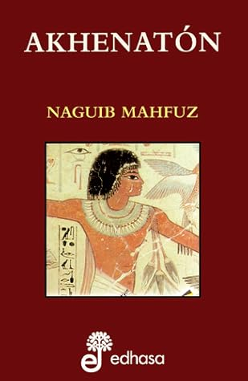

Akhenatón
Reseña por Jorge I. Zuluaga

Ver reseña en GoodReads (necesita cuenta)
La historia de Ajenatón y todo lo que le rodea sigue despertando el interés por igual, de profesionales de la egiptología y de aficionados a la historia (como yo) después de que por casi 3.000 años, estuvo sepultada entre la abandonada necropolis de Amarna (la Ajetatón Egipcia) y el valle de los reyes en Tebas.
Hoy, usando las más avanzadas técnicas de investigación arqueológica, egiptológica, filológica y forense, la verdad sobre lo que paso al "faraón hereje" y a toda su familia, incluyendo el afamado faraón niño, Tutanjamón, está empezando a salir a la luz. Sabemos que sus contemporáneos quisieron borrarlos de la historia, pero al intentarlo y sin ser muy conscientes, crearon el efecto contrario: hoy el linaje de Ajenatón es posiblemente el más investigado y estudiado de todas las familias reales egipcias.
Muchos años antes de que se produjeran los más recientes hallazgos egiptológicos (esto debe entenderse antes de creer que lo narrado en "Ajenatón" refleja el estado del arte en el tema), Naguib Mahfuz, premio Nobel de literatura egipcio, había escrito está maravillosa novel. Yo me vine a enterar de su existencia gracias a la generosidad de Daniel Penagos que me la regalo buscando en su biblioteca, lugar para lecturas más urgentes. Sin querer queriendo (¡hay tanto para leer que no sabe uno por donde empezar!) comencé a leerla y me enganche inmediatamente.
La novela cuenta la historia de Meri-Mon, un curioso joven egipcio que vivió tiempo después de que ocurrieran los convulsos hechos acaecidos durante el reinado de Ajenatón (Amenhotep IV), y que después de conocer las ruinas de la ciudad de Ajetatón (la ciudad sagrada mandada a construir por el rey para refundar la capital del imperio alrededor del culto de Atón, el único dios verdadero en su también recién fundada religión), decide investigar la razón de la emergencia y caída de esa ciudad, y en últimas de la misteriosa figura del "rey hereje".
Para hacerlo, aprovechando la influencia de su padre, consigue realizar una serie de entrevistas a personajes que conocieron de primera mano a Ajenatón: Ay, su maestro y suegro (y quien además se convertiría posteriormente el mismo en faraón, sucediendo al afamado Tutanjamón), Bek, el arquitecto y escultor que le sirvió al rey para levantar la ciudad de Ajetatón, Tiy, su poderosa madre, esposa de Amenhotep III al que sobrevivió y que se es presentada aquí como artifice de promover y tolerar los proyectos religiosos de Ajenatón; Nefertiti, la esposa de Ajenatón, y una de las mujeres más conocidas de la historia real Egipcia, entre otros. Así desfilan por las páginas de esta novela las versiones de una docena de personajes, entre históricos y ficticios, sobre lo que paso en los tiempos de Ajenatón.
A su turno, cada uno de ellos va presentando, en primera persona, una parte de los hechos que rodearon el crecimiento, la crianza, el ascenso al trono, el reinado y muerte del faraón hereje. Dependiendo de su relación con Ajenatón, describen su propia percepción de los hechos, de la persona del mismo Ajenatón y de sus ideas religiosas.
Como resultado de la amplia diversidad de opiniones recogidas por el joven Meri-Mon, la novela va ofreciendo un perfil del rey que es contradictorio y extraño. Pero esto, en lugar de hacer más indescifrable el personaje de Ajenatón, rebela con mayor realismos su propia humanidad. Son las contradicciones, el amor y el odio que despierta, las que lo hacen precisamente más humano y más real para quiénes amamos la historia.
Se trata de una obra de ficción, pero es difícil no pensar que están hablando de una persona real. Allí está la maestría de Naguib Mahfuz.
Es difícil no adoptar una postura frente al rey y su proyecto religioso. No sentir que simpatizas con algunas de las versiones fabricadas por la imaginación magistral de Mahfuz. Yo, personalmente, quede bastante impactado por las historias positivas del personajes. Por la versión de quiénes lo amaron y admiraron. Y es difícil no dejarse contagiar de su filosofía (bueno, la filosofía imaginada por Mahfuz en esta novela), tan parecida (y aquí no hay casualidad) al mensaje de Jesús.
Si son verdaderos #KemetLovers deben leer "Ajenathon".